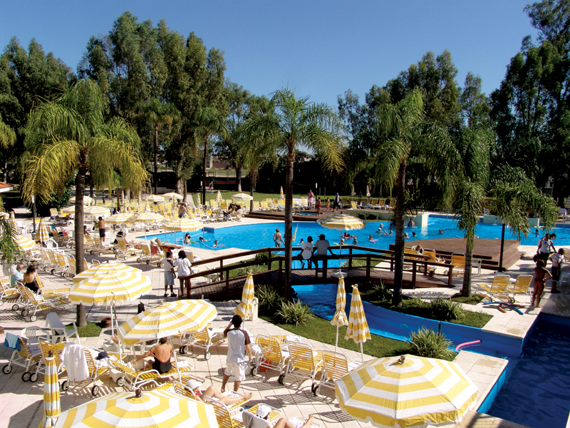
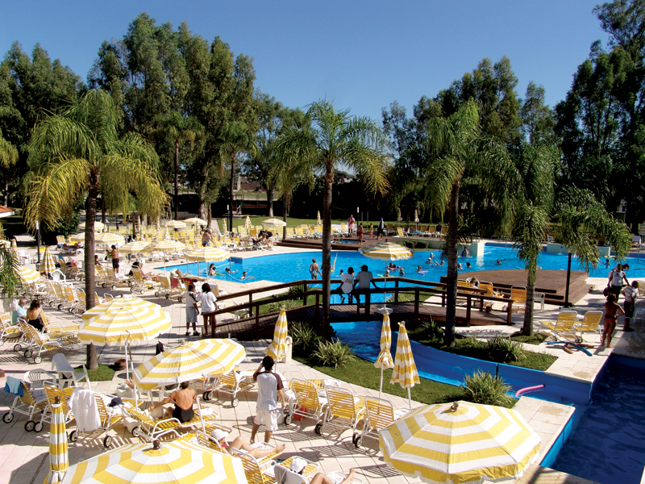
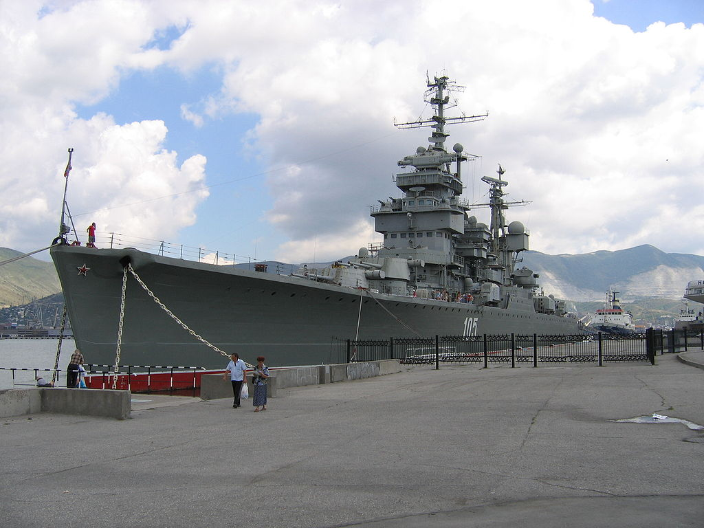

|
|

|

Fue depositado el 22 de febrero de 1951 en Nikolaev , en el Astillero Nikolaev N I.Nosenko , número de fábrica 385. Lanzado el 29 de noviembre de 1951 , el 9 de agosto de 1954, se levantó una bandera naval en el crucero , se alistó en la Flota del Mar Negro de Bandera Roja. por orden del Ministro de Defensa de la URSS del 31 de enero de 1955 .
Visitó Rumania en 1955, Split ( Yugoslavia ) en 1956 y 1964, Durres ( Albania ) en 1956 y 1957, en Varna ( Bulgaria ) en 1964, y Argelia en 1968. En junio de 1967, se encontraba en la zona de operaciones militares, realizó la misión de combate de asistencia a las fuerzas armadas de Egipto , y del 1 de agosto al 31 de diciembre de 1968 : las fuerzas armadas de Siria .

Es un escritor y programador dominicano, nacido el 28 de noviembre de 1995 en el sector Arroyo hondo II en la provincia Santo Domingo. Desde temprana edad demostró una gran pasión por la literatura, la historia, el arte y los videojuegos desde sus primeros años mostro cierto grado de agilidad mental y destrezas académicas permitiendo ganar en 8 ocasiones premios a la excelencia académica incluso llegando a obtener el tercer lugar en la competencia sobre la vida y obra del patricio Juan Pablo Duarte organizada por el instituto duartiano dominicano en el año 2009.
En el año 2009 ingresa al Instituto politécnico cardenal Sancha en donde completo sus estudios secundarios en el periodo 2009-2013 en donde obtuvo el título de bachiller técnico en informática, mas tarde en ese mismo año 2013 ingreso en el Instituto tecnológico de las Américas (ITLA) en la carrera de tecnólogo en desarrollo de software.
Es un escritor y programador dominicano, nacido el 28 de noviembre de 1995 en el sector Arroyo hondo II en la provincia Santo Domingo. Desde temprana edad demostró una gran pasión por la literatura, la historia, el arte y los videojuegos desde sus primeros años mostro cierto grado de agilidad mental y destrezas académicas permitiendo ganar en 8 ocasiones premios a la excelencia académica incluso llegando a obtener el tercer lugar en la competencia sobre la vida y obra del patricio Juan Pablo Duarte organizada por el instituto duartiano dominicano en el año 2009.
En el año 2009 ingresa al Instituto politécnico cardenal Sancha en donde completo sus estudios secundarios en el periodo 2009-2013 en donde obtuvo el título de bachiller técnico en informática, mas tarde en ese mismo año 2013 ingreso en el Instituto tecnológico de las Américas (ITLA) en la carrera de tecnólogo en desarrollo de software.